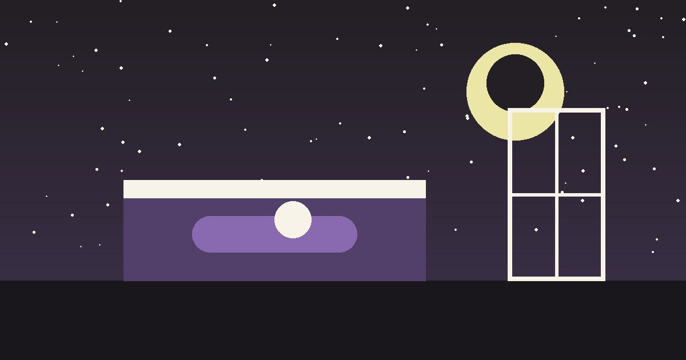

El niño que no duerme no es berrinchudo: tiene miedo
*Guía para padres · Ansiedad infantil y sueño*

Son las 11 de la noche. Tu hijo lleva dos horas dando vueltas, pide agua, pide el baño, pide que te quedes. Y tú piensas: *¿por qué no se duerme? ¿qué hago mal?*
Antes de culparte, déjame darte un dato: la ansiedad es hoy el problema de salud mental más frecuente en la infancia. En México, un tercio de los niños que buscan atención por salud mental lo hacen por ansiedad, y la demanda creció más de 60% en los últimos años. No eres el único papá despierto a medianoche. Hay millones.
Y aquí va lo importante: el insomnio en un niño rara vez es un problema de sueño. Es un problema de miedo.
El cuerpo de tu hijo lleva una alarma encendida. Durante el día puede funcionar "bien": juega, come, rinde en la escuela. Pero de noche, sin distracciones, la alarma suena: el corazón acelera, la respiración se corta, la mente repasa el día. Eso no se arregla con más cansancio ni con apagar la luz más temprano. Se trabaja en el cuerpo, en presencia.
Desde la Gestalt, esto es lo que suelo hacer con las familias, y te lo dejo como primer paso:
- Presencia antes que técnica. Diez minutos al lado de su cama, sin celular, sin prisa, respirando lento. Tu sistema nervioso regula el suyo. No es magia: es contacto.
- Nombrar lo que siente. "Veo que tu pecho se mueve rápido, ¿qué crees que está pasando ahí?" Ponerle nombre a la sensación baja la alarma más que cualquier explicación.
- Rutina como ancla, no como castigo. La hora de dormir no se negocia con enojo a las 11 pm. Se acuerda en calma, temprano, y se cumple con ternura firme.
Te soy honesto: la Gestalt no es una cura milagrosa ni yo te vendo "evidencia científica" inflada. Lo que sí es —y lo que la investigación respalda— es un trabajo sobre expresión emocional, autoestima y regulación, con resultados que las propias familias reportan: menos miedo, mejor sueño, relaciones más sanas en casa.
Si tu hijo lleva semanas sin dormir, si el miedo ya le está costando en la escuela o en su ánimo, no esperes a que se le pase solo. La ansiedad infantil sin acompañamiento tiende a crecer con él.
Soy Oscar Robledo, psicólogo de orientación Gestalt. Atiendo en línea a niños y familias.
→ oscarrobledo.qtzl.cloud — agenda tu primera sesión.
*Fuentes (resumen): CDC 2023–2024 (ansiedad 11% en 3–17 años); Save the Children / ENSANUT 2022 (ansiedad 7% en 5–17; 34.6% de la demanda de salud mental infantil en México); Stripling, 2021 (revisión Gestalt en niños/adolescentes: expresión emocional, autoestima, ansiedad); Pujol et al., 2024 (percepción de familias: menos miedo y mejor vínculo).*